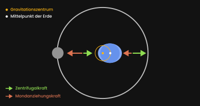
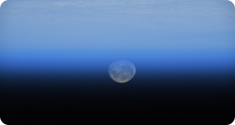

Der am weitesten entfernteste Punkt zum Mittelpunkt der Erde ist wegen der Aufwölbung am Äquator nicht Mount Everest, sondern der Chimborazo Vulkan in Ecuador.
Erde
QUICK FACTS
1
Entfernung zur
Sonne (in
AU)
9,8
Gravitation
(in m/s²)
1
Bekannte
Monde
Physikalische Eigenschaften
So interessant das Weltall auch ist, muss man nicht weit gehen, um den interessantesten und schönsten Planeten da draußen zu finden, die Erde. Ein Planet mit Ozeanen, einer Sauerstoff reichen Atmosphäre welcher außerdem unser Zuhause ist.
Form
Vielleicht hast du mal gehört, dass die Erde ja keine perfekte Kugel
sein soll, sondern eher die Form einer Kartoffel oder eines Eis hat.
Das ist aber mehr übertrieben als wahr und bildet dir vielleicht ein
falsches Bild im Kopf.
Die Erde ist zwar am Äquator breiter als an den Polen, aber nur um etwa
45 Kilometer. Das liegt an der Rotation, die dazu führt, dass sich die
Erde am Äquator ein wenig aufwölbt. Im Durchschnitt hat die Erde einen
Durchmesser von 12.742 km.
Platentektonik
Die Erde hat eine relativ dünne Kruste, welche aus verschiedenen beweglichen Platten besteht und unter der sich ein zähflüssiger Mantel aus geschmolzenem Gestein mit einer Temperatur von 2000 °C bis 3600 °C befindet.
Mantelkovektion
Der zähflüssige Erdmantel wird durch den Erdkern erhitzt und bewegt sich mit extrem langsamen 5 cm pro Jahr hoch zum oberen Mantel, in der Nähe der Erdkruste, wo sich das Gestein abkühlt und seitlich wieder nach unten sinkt, um wieder erhitzt zu werden. Dieser Kreislauf dauert 240 Millionen Jahre.

Auswirkungen des Bewegens der Platten durch Mantelkonvektion können wir in Bildung von Vulkanen, Bergen oder Erbeben wahrnehmen.
Magnetfeld
Unter dem Mantel ist der Erdkern, welcher aus Eisen und Nickel besteht und
einen Durchmesser von bis zu 5000 Kilometer erreicht. Die Erde ist wegen
dieses Erdkerns mit 5,5 g/cm³ der dichteste Planet im Sonnensystem.
Der Erdkern ist der Ursprung unseres Magnetfeldes, wenn der Erdkern sich bewegt,
wandelt er kinetische Energie in elektrische Energie um und erzeugt dadurch ein
massives Magnetfeld um die Erde.
Die energiereichen Teilchen der Sonne werden durch das Magnetfeld um den Planeten herum oder zu den Polen geleitet, wo die geladenen Teilchen in die Atmosphäre fallen und anfangen als Polarlichter grün zu leuchten.
Videoausschnitt von Kurzgesagt aus dem Video:
Wie Sonnenstürme unsere Zivilisation zerstören könnten
Ebbe & Flut
Die Erde umkreist das Gravitationszentrum von ihr selbst und dem Mond, welches wegen der größeren Masse der Erde sogar in innerhalb der Erde selbst liegt. Dadurch erfährt die gesamte Erde Zentrifugalkraft nach außen. Dieser Prozess hat nichts mit der Rotation der Erde selbst zu tun.

Auf der einen Seite des Planeten zieht die Anziehungskraft des Mondes am Ozean und auf der anderen die Zentrifugalkraft, welche durch Umkreisens des Gravitationszentrum entsteht. Da die Erde sich dabei rotiert, kommen 2 Mal Ebbe und Fluten an einem Tag zustande.
Orbit & Orientation
Die Erde umkreist die Sonne in einer durchschnittlichen Entfernung von 150.000.000 Kilometer, 147.000.000 Kilometer am nächsten Punkt und 152.000.000 Kilometer am weit entfentesten Punkt. Man sagt auch das die durchschnittliche Entfernung von Erde zur Sonne eine Astronomische Einheit ist. (Astronomical Unit = AU)
Jahr & Monat
Unsere Methode der Zeitmessung ist vielleicht nicht so genau, wie du denkst. Die Erde braucht eigentlich 365,25 Tage, um die Sonne einmal zu umrunden. Deshalb hat der Februar alle vier Jahre statt 28, plötzlich 29 Tage. Somit passen dann die 0,25 Tage jedes Jahr in unseren Kalender.

Ein Monat soll mit einer Umrundung des Mondes um die Erde übereinstimmen, welche ungefähr 28 Tage dauert. Deshalb hören sich die Wörter Monat und Mond so ähnlich an.
Erdrotation
Für eine 360° Drehung um die eigene Achse (Siderischer Tag) braucht die Erde 23 Stunden und 56 Minuten. Du fragst dich jetzt vielleicht, wo die restlichen 4 Minuten eines Tages jetzt hin sind? Ganz einfach, wir messen einen Tag nicht als Siderischen Tag, sondern als Sonnentag .
Da die Erde sich beim Umkreisen der Sonne jeden Tag ein Stück vorwärts bewegt, muss die Erde sich ein Stück weiter um sich selbst drehen, damit die Sonne wieder am selben Punkt wie am Vortag aufgeht.
Erdachsen Neigung
Die Rotationsachse der Erde liegt etwa 23,4° zur Ebene des Sonnensystems. Diese Neigung verleiht der Erde so abwechslungsreiche Jahreszeiten.
Jedoch kommen die Temperaturänderungen zwischen den Jahreszeiten nicht, weil ein Punkt, wegen der Neigung, näherer an der Sonne liegt.
Distantz & Temperatur
Wenn du glaubst, dass durch die Neigung die kleine Distanzänderung einer Erdhalbkugel Temperaturänderungen verursacht, solltest du vielleicht daran denken, dass die wir keinen Temperaturunterschied bei den jährlichen 5.000.000 Kilometer Schwankungen im Orbit der Erde spüren.
Bedingungen
Wir wissen ja wie es auf der Erde ist, aber wie komme diese Bedingungen zustande und gibt es auch Dinge dir wir noch nicht verstehen?
Jahreszeiten
Der Grund für Jahreszeiten, also die Temperaturänderungen, ist die Größe der Oberfläche, auf die das Licht der Sonne trifft. Dadurch das die Erdachse geneigt ist, zeigt im Laufe einer Umkreisung um die Sonne mal mehr Oberfläche der Nordhalbkugel und mal mehr der Südhalbkugel zur Sonne.
Atmosphäre
Unsere Atmosphäre besteht hauptsächlich aus 78 % Stickstoff (N2), 21 % Sauerstoff (O2) und 1 % Argon, mit Spuren anderer Gase wie Kohlendioxid. Auch Wasserdampf (H2O) ist vorhanden, aber es kann von nur 0,01 % bis 4 % stark variieren, der Durchschnitts wert liegt bei 1%.
Ozon (O3) ist in einer speziellen Schicht der Atmosphäre auch vorhanden, der Ozonschicht. Diese absorbiert viel von der schädlichen UV-Strahlung der Sonne, die das Leben an Land ermöglicht.
Wetterphänomene
- Blitze
- Entfernung
- Sprites
Graupelteilchen und Eiskristalle reiben innerhalb der Wolke und erzeugen ein elektrisches Feld. Dadurch entsteht im unteren Teil der Wolke eine negative Ladung. Der Blitz entsteht, wenn sich die negative mit der positiven Ladung des Boden ausgleichen will.
Mit einem einfachen Trick kann man die Entfernung eines Gewitters berechnen. Schall hat eine Geschwindigkeit von 340 m/s, zähle deshalb die Sekunden zwischen Blitz und Donner und multipliziere die Sekunden dann mit den 340. z. B. 3 Sekunden * 340 Meter/Sekunden = 1.020 Meter.
Sprites sind kurzlebige Ereignisse, die 3 bis 5 Millisekunden dauern, 50 Kilometer hoch und breit sind und sich mit 10 % der Lichtgeschwindigkeit nach unten bewegen. Im Gegensatz zu Blitzen, sind Sprites kalte Plasmaereignisse, ähnlich wie eine Leuchtstoffröhre, welche über Gewitterwolken entstehen.